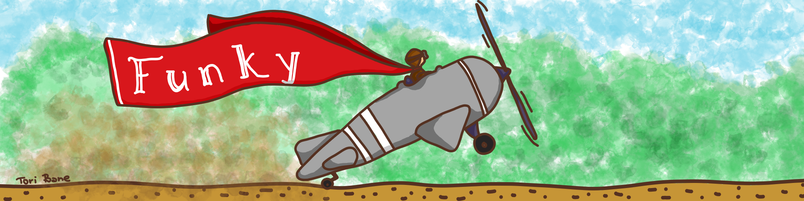

Taking off the ground

Funky is a new, small programming language that's like and unlike any other language you've seen before.
It's purely functional, doesn't cheat, but unlike most languages in this space, Funky lets you structure your code top to bottom. Idiomatic Funky code often reads like a well-written imperative algorithm. This lends code that is natural to read - yet in the end, it's basically just λ-calculus.
Funky aims for simplicity and joy. No categories, no monads, no weird abstract math operators. Nothing unnecessary. Funky is a pragmatic language for programmers.
A small warning. Funky was created from scratch. While the standard, battle-tested, functional core, like
map,filter,Maybe, etc. will be familiar to all functional programmers, many things will surprise you. For example, as we'll soon discover,letandifare not built-in to the language. Instead, they're functions just like any other. Many more surprises await you in the tour.
So, here we go!